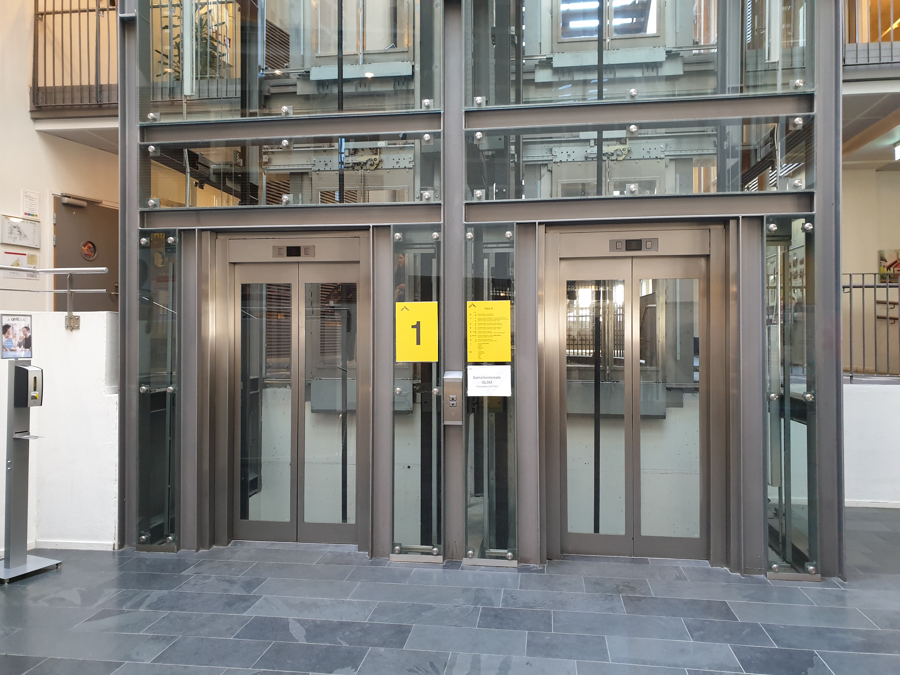

OsloMet is a great school and we love spending time here. Most of our time is spent in P35 – The building has MANY floors. Luckily, most of the students are healthy and manage to walk up the stairs to the 8th floor if they have to, but some students aren’t capable and depending on an elevator to have a good life quality. Unfortunately, all the healthy students who are perfectly capable of taking the stairs, are standing in line for several minutes to take the elevator – even if it’s just for one floor! This does not only lead to a packed vestibule full of chaos, but it is also an obstacle for the students, teachers, visitors with disability – Oh, and let us not forget about the overwhelmed cleaning staff! It is a shame that the people who really need the elevator, cannot use it because it is packed with young, trained, healthy people who are too lazy to take the stairs.